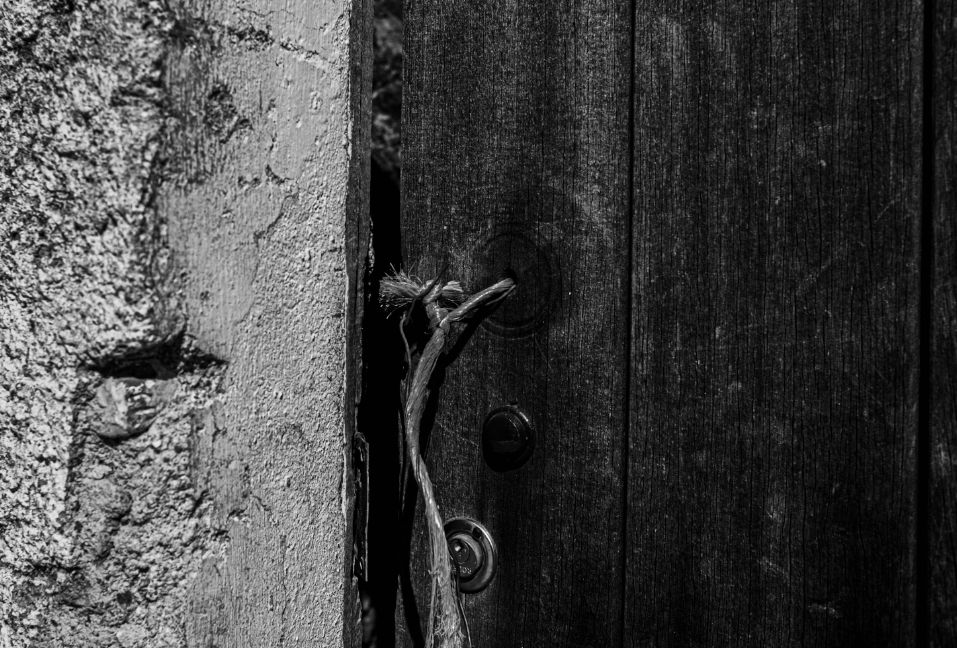
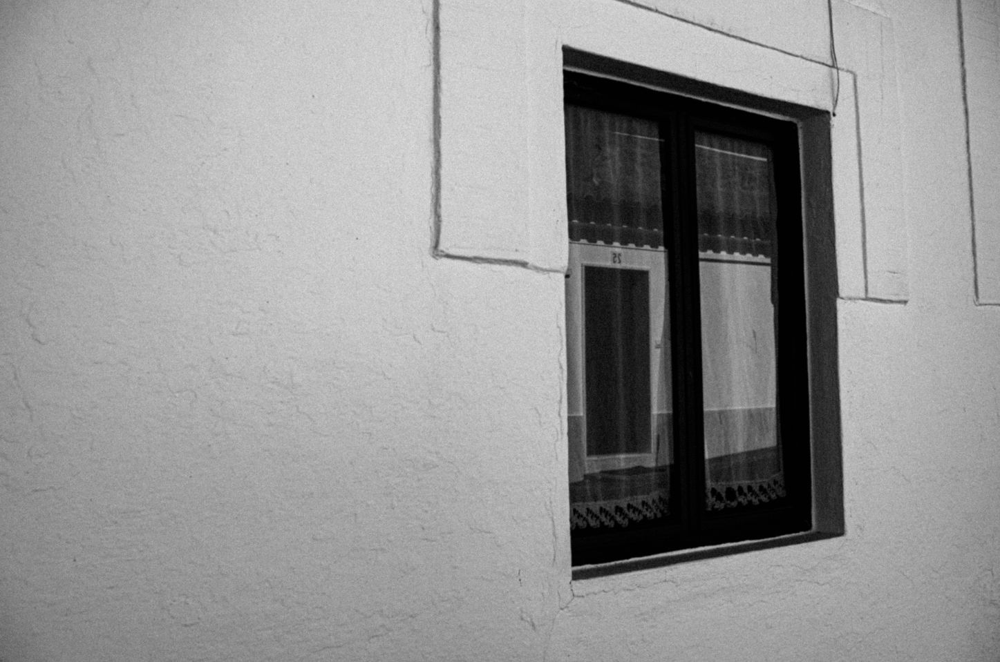
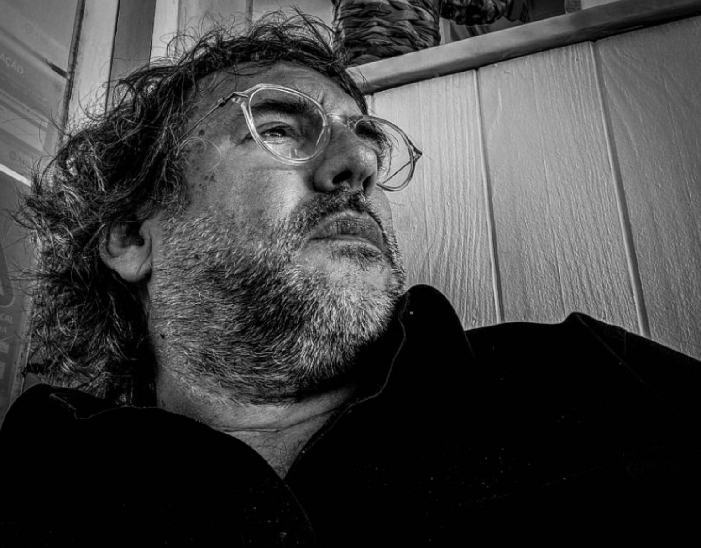

Visual artist · Portugal
Silence.
Territory.
Absence.
Black-and-white photographic work exploring human traces, memory and the tension between nature and the built environment.
View selected work
Selected work
Projects

About
CALEIRA is a Portuguese visual artist working with black-and-white photography.
His practice explores silence, territory, absence and the subtle traces of human presence. Through landscapes, architecture and everyday spaces, he creates images that move between documentary observation and poetic interpretation.
Working in long-term photographic series, CALEIRA is interested in the tension between nature and the built environment, memory and transformation.
Based in Portugal.
Contact